왜 옵시디언이었나요?
게스트 구요한 대표는 스스로를 '옵시디언 전도사'라고 소개해요. 물리학으로 석사를, 교육공학으로 박사를 했고, 지금은 커맨드스페이스를 운영하며 AI와 지식관리 강의·컨설팅을 해요. 대학 겸임교수와 국가과학기술인력개발원 객원교수로도 일하고, 재즈 보컬리스트로 무대에도 서요.
그는 강의 때마다 "2주 뒤에 뵙겠습니다"라는 말을 해요. 모르는 걸 물어보면 2주 동안 공부해서 제대로 알려 주겠다는 뜻이에요. 옵시디언도 그렇게 시작했어요. 2022년 5월, 노션의 제약이 답답해서 여러 도구를 비교하다가 옵시디언을 만났고, 처음 본 날로부터 2주 뒤에 바로 온라인 세미나를 열었대요.
첫 번째 이유: 마크다운
옵시디언을 고른 가장 큰 이유는 마크다운이에요. 아래 화면 왼쪽의 .md 파일 하나를 텍스트 편집기로 열면 기호가 섞인 원문이, 마크다운 뷰어로 열면 제목과 목록이 정리된 모습이 보여요. 보는 방식은 달라도 내용은 그대로예요. .txt처럼 운영체제나 프로그램과 상관없이 열리는 범용 데이터라는 거예요.
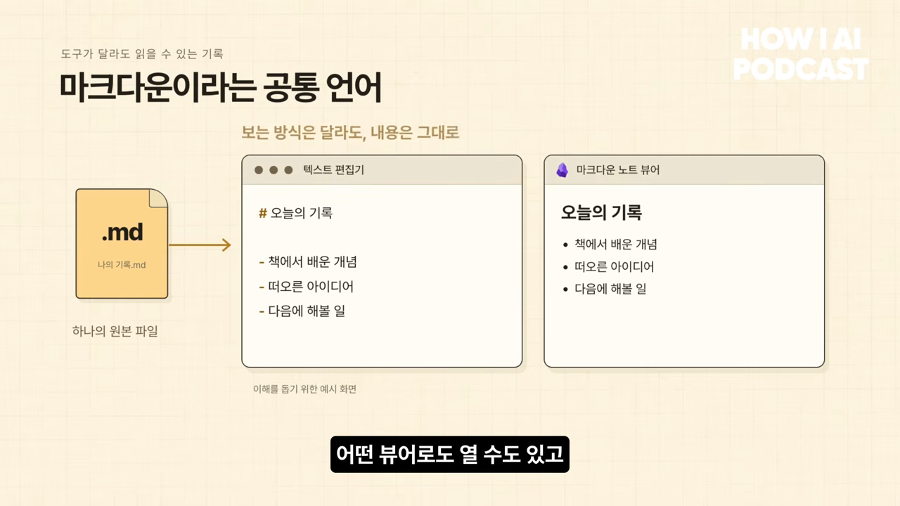
처음 옵시디언을 쓸 때는 AI가 붙을 줄 몰랐대요. 그런데 Claude Code가 나오면서 상황이 바뀌었어요. 아래 슬라이드처럼 볼트에 쌓인 1만여 개의 마크다운 파일을 Claude Code가 읽고, 흩어진 메모를 연결해서 지금 필요한 답을 만들어 줘요. 돌아보니 자기 볼트를 그대로 AI의 기억으로 쓰고 있었던 거예요.
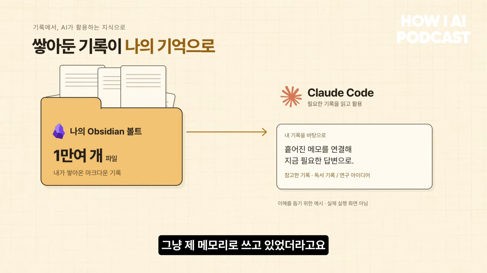
두 번째와 세 번째 이유: 로컬, 그리고 플러그인
두 번째 이유는 데이터가 내 컴퓨터에 남는다는 점이에요. 아래 슬라이드의 노트북 안에 볼트가 들어 있는 그림이 그 뜻이에요. 내 데이터의 원본을 내가 갖고 있다는 게 중요하다고 봤대요.
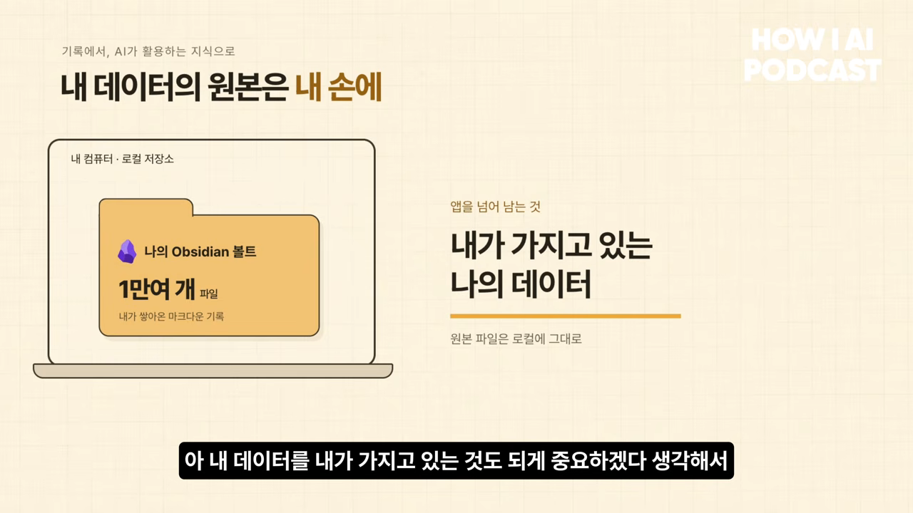
세 번째는 서드파티 플러그인 생태계예요. 옵시디언 자체는 오픈소스가 아니지만, 누군가 필요한 플러그인을 만들어 공개하면 다 같이 쓰는 문화가 살아 있어요. 그는 이걸 보고 "나도 시간을 써서 만들어 보면 재밌겠다"고 생각했대요.
지식으로 들어오는 길을 설계해요
노트를 어떻게 유용하게 쓰는지 묻자, 그는 그보다 먼저 짚을 게 있다고 해요. 내 지식관리 시스템의 체계를 내가 이해하고 있느냐는 거예요. 그래서 처음에 설계에 시간을 많이 들였고, 그때 만든 문서 두 개를 보여 줘요.
목차 문서와 규칙 문서
아래 화면 왼쪽이 CMDS Head Quarter, 오른쪽이 CMDS Guide예요. 왼쪽은 지식 전체의 목차예요. 연구자답게 논문의 장처럼 번호를 매겼어요. 화면에 보이는 500 Products 아래에 501 Obsidian, 520 ChatGPT, 521 Claude가, 600 Specialties 아래에 601 Knowledge Management, 620 Generative AI가 있고, 옆의 작은 숫자는 그 주제에 연결된 노트 수예요. 목록 맨 끝 900번대에는 그의 여러 페르소나가 들어가요.
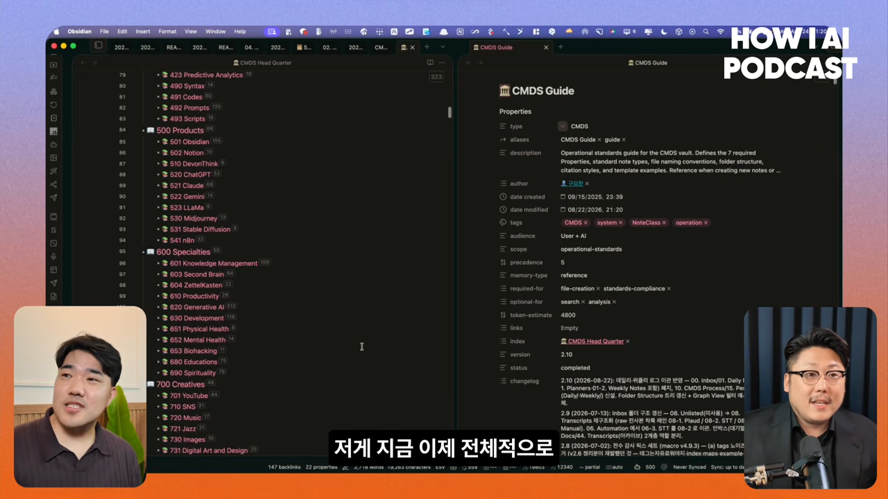
그는 이 목차를 "유일한 통로는 아니다"라고 해요. 인터뷰어 조쉬를 떠올릴 때도 스레드 계정, 유튜브 채널, 함께한 식사 자리, 그날 날짜처럼 여러 길로 기억이 나잖아요. 노트도 마찬가지로 여러 길로 찾아올 수 있어야 한대요.
그래서 던지는 질문이 있어요. 수첩 36페이지에 쓴 메모는 몇 페이지와 이어질 수 있을까요? 35와 37, 두 장뿐이에요. 디지털 노트는 다르다는 걸 아래 슬라이드가 보여 줘요. 가운데 '나의 기록' 노트에 같은 태그, 관련 자료, 연구 관련 분류, 다른 날의 메모, 새로운 아이디어가 선으로 이어져 있어요. 꼭 옆에 붙어 있지 않아도, 내가 선언해 주면 연결되는 거예요.
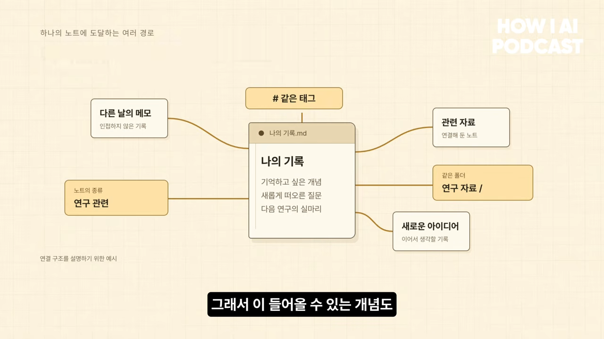
그 길을 일관되게 내려면 메타데이터 규칙이 필요해요. 아래 CMDS Guide의 본문을 보면 작성자는 위키링크로, 날짜는 모두 ISO(International Organization for Standardization) 8601 형식(YYYY-MM-DD)으로, 평점 myRate는 1~5 숫자로 쓰라고 적혀 있어요. status에 쓸 수 있는 값도 unread, reading, inProgress, completed, archived로 정해 뒀어요. 나중에도 같은 모양으로 노트를 쓰기 위해서예요.
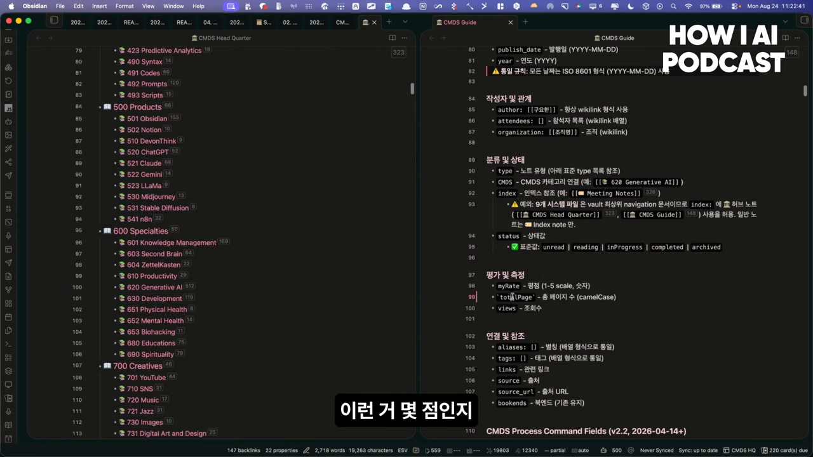
태그로는 노트가 연구인지, 프로젝트인지, 강의인지, 일기인지 구분해요. 파일 이름의 접두어·접미어 규칙도 처음엔 적었는데 점점 늘었대요. 예를 들어 특정 기호 조합으로 검색하면 그가 연습하는 재즈곡만 모여서 나와요. 이렇게 하나씩 들어오는 길을 설계했어요.
나를 위한 설명서에서 AI를 위한 설명서로
두 문서의 독자는 세 번 바뀌었어요. 아래 슬라이드처럼 처음에는 기록하고 다시 찾는 법을 정리한 자기용 문서였고, 다음엔 수강생에게 지식관리 방식을 가르치는 문서가 됐어요. 지금은 AI가 참조하는 설명서예요.
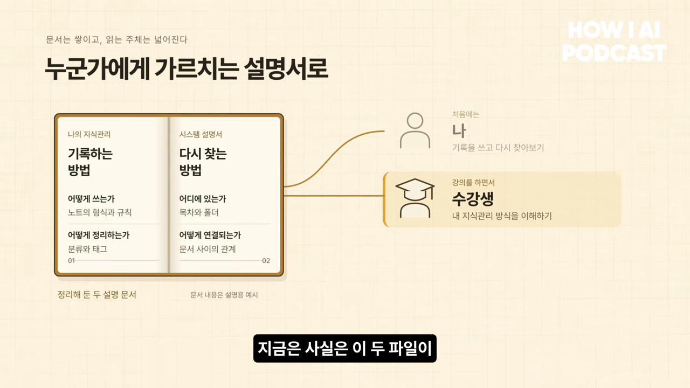
AI만 보는 문서는 따로 있어요. CLAUDE.md나 AGENTS.md 같은 파일이에요. 그는 이 AI용 문서와 사람용 문서 두 개를 모두 웹페이지로 공개했어요. 아래 화면의 왼쪽 메뉴를 보면 'AI 문서' 아래 CLAUDE.md, AGENTS.md가, '휴먼 문서' 아래 Guide와 Head Quarter가 있고, 압축 파일로 내려받을 수도 있어요.
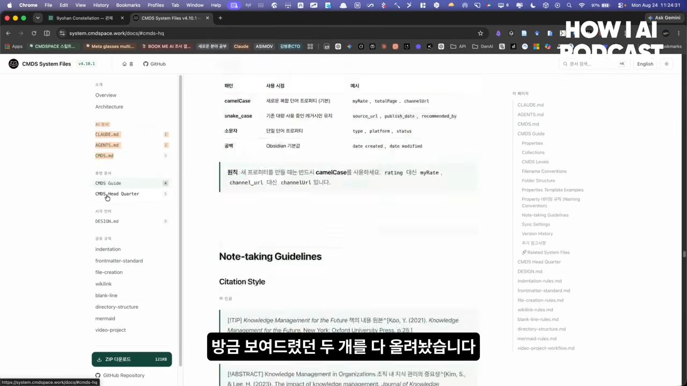
왜 이렇게까지 정리할까요
파일 검색이 빠른데 굳이 이렇게 정리해야 하냐는 질문도 받는대요. 그의 답은 정리해 둬야 그 지식 위에서 마음껏 놀 수 있다는 거예요. 시스템의 구조를 내가 이해할 수 있게 만들어 두는 게 핵심이에요.
조쉬는 요즘 누구나 개인 에이전트의 하네스를 설계하고 아기 키우듯 키워야 한다고 말해요. 그런데 구요한 대표의 방식은 캐릭터를 키우기보다 지식 체계를 설계하는 느낌이라고 해요. 그는 동의해요. 시키지 않아도 알아서 도는, 자기보다 수준 낮은 걸 만들고 싶지는 않았대요. 그는 계속 공부하고 애쓰고 싶은데 혼자 힘으로는 부족하니, AI를 사람의 능력을 키워 주는 도구로 본다고 해요. 그래서 자기 사업을 '슈퍼휴먼 비즈니스'라고 부르고, 열려 있는 Claude Code 세션만 100개쯤 된대요.
모든 일이 옵시디언을 거쳐 가요
메인 볼트의 노트는 1만 개가 넘어요. 이게 일상에서 어떻게 쓰이냐는 질문에 그는 "모든 데이터가 옵시디언을 경유한다"고 답해요. 다만 최종 결과물까지 볼트에 두지는 않아요. 슬라이드로 만들 건 슬라이드로, PDF(Portable Document Format)로 나갈 건 PDF로 나가요. 볼트에 남는 건 마크다운으로 된 기획 문서와 일 전체를 지휘하는 문서예요.
기획 문서가 바깥 폴더를 가리켜요
프로젝트를 하면 메인 볼트에 기획서와 단계가 올라와요. 그런데 실제 작업물은 옵시디언과 상관없는 폴더에 있어요. 그래서 기획 문서에 "개발 프로젝트는 DEV 폴더에 있는 걸 봐라", "보낼 계약서나 성과 보고서는 실제 프로젝트 폴더에 넣어라"라고 적어 둬요. 아래 화면은 한 연구 자문 건의 볼트 폴더 위에, 볼트 밖의 개발 폴더와 강의 자료 폴더를 함께 띄운 모습이에요.
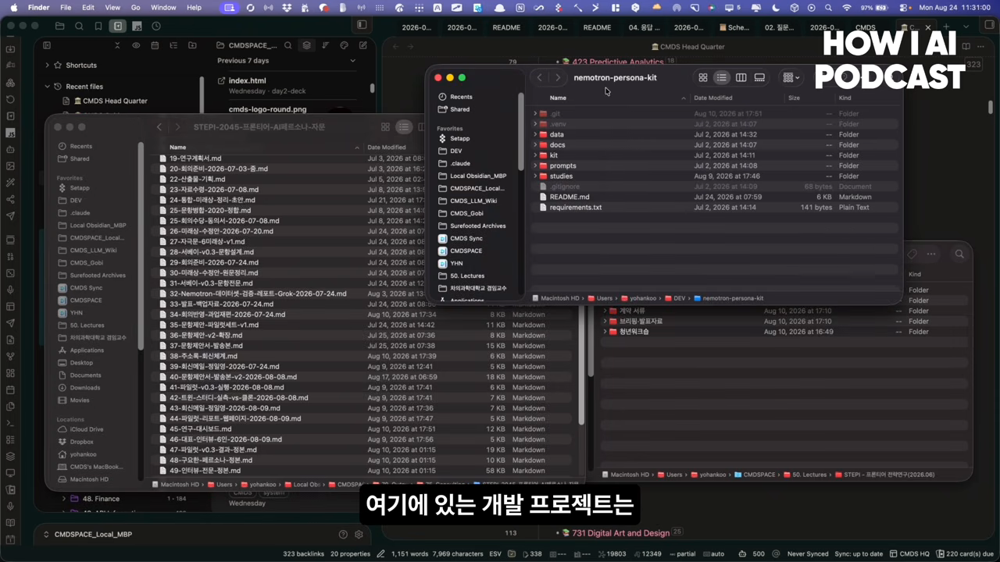
폴더끼리 잇는 데는 Hookmark라는 도구를 쓴다고 해요. 구조를 그려 보면 이래요.
이 인터뷰도 볼트에서 준비했어요
인터뷰 준비 과정이 좋은 예예요. 조쉬가 보낸 질문지 원본이 프로젝트 폴더에 그대로 들어오고, 채널 조사와 질문지 검토가 이어졌어요. 조쉬가 "수치가 틀렸을 수 있으니 이상하면 말해 달라"고 했던 걸 반영해서, 질문 속 숫자를 실제 볼트와 대조하는 검토본을 만들었어요. 아래 화면이 그 검토본이에요. 질문 번호마다 확인됨(초록 체크), 부분 확인(노란 경고), 틀림(빨간 X) 판정과 지금 실제 값이 적혀 있어요.
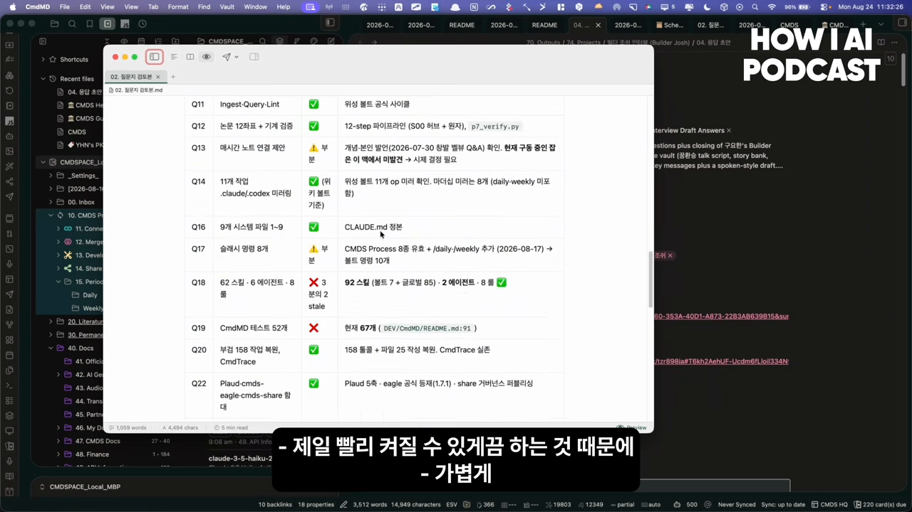
이 표를 띄운 앱은 그가 직접 만든 마크다운 뷰어 CmdMD예요. 제일 빨리 켜지게 하려고 가볍게 만들었대요. 검토본 다음에는 정정본과 응답 초안까지 만들었어요.
최근에 신경 쓰는 건 어떤 모델이 문서를 만들었는지 적는 거예요. 아래 응답 초안의 속성 칸을 보면 model에 claude-fable-5[1m], effort에 xhigh가 적혀 있어요. 그는 문서를 다시 읽고, 마음에 든 점과 안 든 점을 모델에게 피드백해요. 그러려면 누가 썼는지 알아야 한대요.
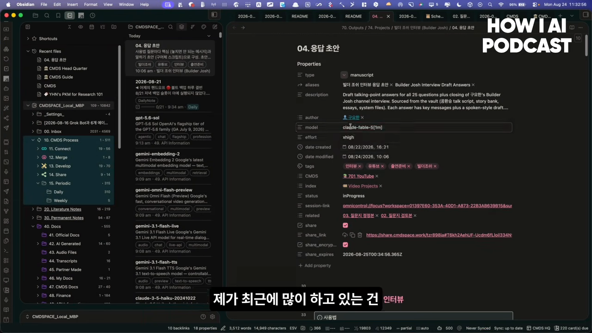
model과 effort 바로 아래 CMDS 칸에 '701 YouTube' 번호도 붙어 있어요. 이 번호는 섹션 5에서 다시 나와요. 영상 15:58에서 보기AI가 운영하는 두 번째 볼트, LLM 위키
지금까지 본 건 메인 볼트였어요. 그에게는 성격이 전혀 다른 볼트가 하나 더 있어요. AI가 주도해서 운영하는 LLM 위키 볼트예요.
저자가 다른 두 볼트
아래 슬라이드가 둘의 차이를 정리해요. 왼쪽 메인 볼트는 '나'가 운영·승인·지시하고 AI는 어시스트해요. 오른쪽 LLM 위키 볼트는 AI가 주도적으로 운영하고 '나'는 관리·감독만 해요. 그는 이걸 "저자가 다르다"고 표현해요. 메인 볼트의 저자는 구요한이고, 위키 볼트의 저자는 LLM이에요.
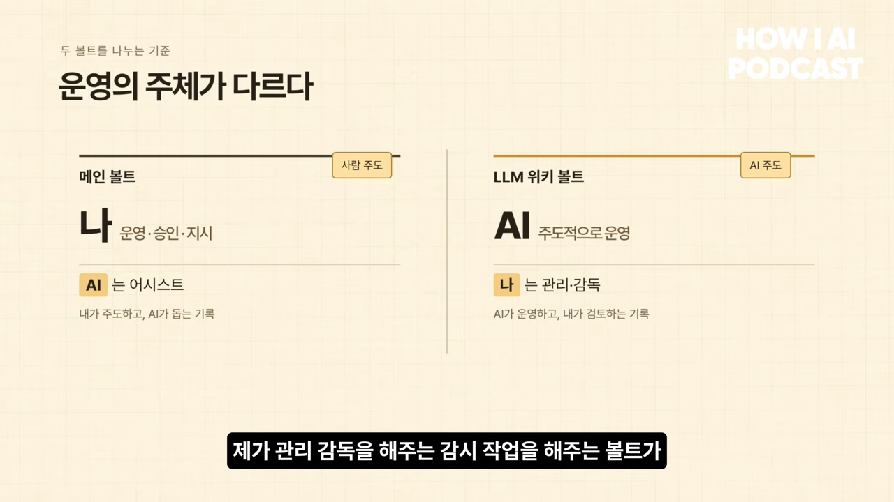
무엇을 어디에 담는지도 달라요. 메인 볼트에는 눈 감고도 말할 수 있는 내용, 정말 즐거운 일들이 들어가요. 위키 볼트에는 관심은 있지만 아직 명확히 설명하지 못하는 지식이 들어가요. 조쉬 채널에 대한 공부나 요즘 하는 에이전틱 메모리 공부 같은 것들이에요. 자기 속도에 맞춰 하나씩 천천히 본대요.
그는 이 관계를 우주선에 비유해요. 아래 슬라이드 가운데 '메인 볼트'가 모선(Mothership)이고, 바깥 궤도에 'LLM 위키'가 붙어 있어요. 영상에서는 팀 멤버와 쓰는 공동 볼트, 수강생과 함께하는 볼트도 같은 위성으로 들어요. 아주 먼 지식이 아니라 내 손이 닿는 거리의 지식으로 위성 궤도를 짠다는 뜻이에요.
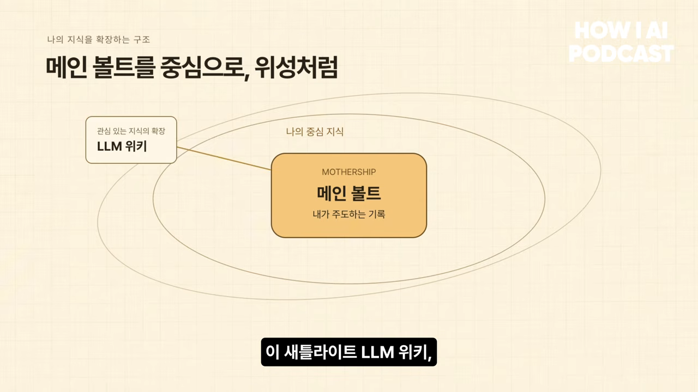
두 볼트의 차이를 표로 모으면 이래요.
| 메인 볼트 | LLM 위키 볼트 | |
|---|---|---|
| 저자 | 구요한 | LLM |
| 사람의 역할 | 운영·승인·지시 | 관리·감독 |
| AI의 역할 | 어시스트 | 주도적으로 운영 |
| 담는 지식 | 눈 감고도 말할 수 있는 것, 즐거운 일 | 관심은 있지만 아직 설명 못 하는 것 |
| 공개 여부 | 설계 원리만 공개 | 설계 스키마만 공개 |
그의 데이터는 비공개지만, 위키 볼트를 설계한 스키마는 공개돼 있어요. 아래 GitHub 릴리스 화면의 Assets에서 cmds-llm-wiki-v1.11.0.zip을 받아 옵시디언 볼트로 열면 돼요. 안에는 온보딩 스킬도 있어서 "온보딩"이라고 하면 "당신은 누구인가요? 왜 지식을 관리하려고 하시나요?"부터 물어본대요.
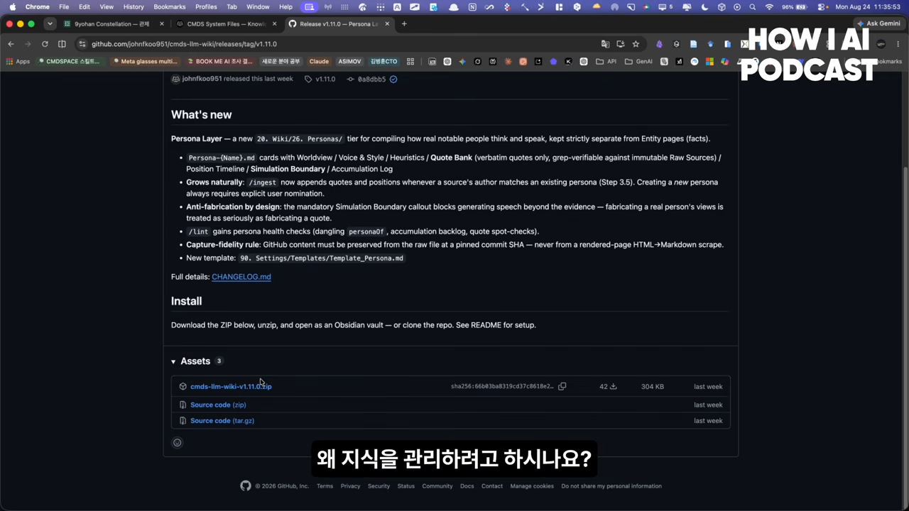
소개 페이지는 이 위키를 "사람과 AI가 함께 컴파일하는 위키"라고 불러요. 아래 화면의 설명 문장을 보면 외부 자료를 LLM이 읽고 영구 위키로 컴파일하는 위성 볼트이고, 매번 RAG로 다시 검색하지 않는다고 적혀 있어요. 바로 다음에 조쉬가 묻는 게 이 차이예요.
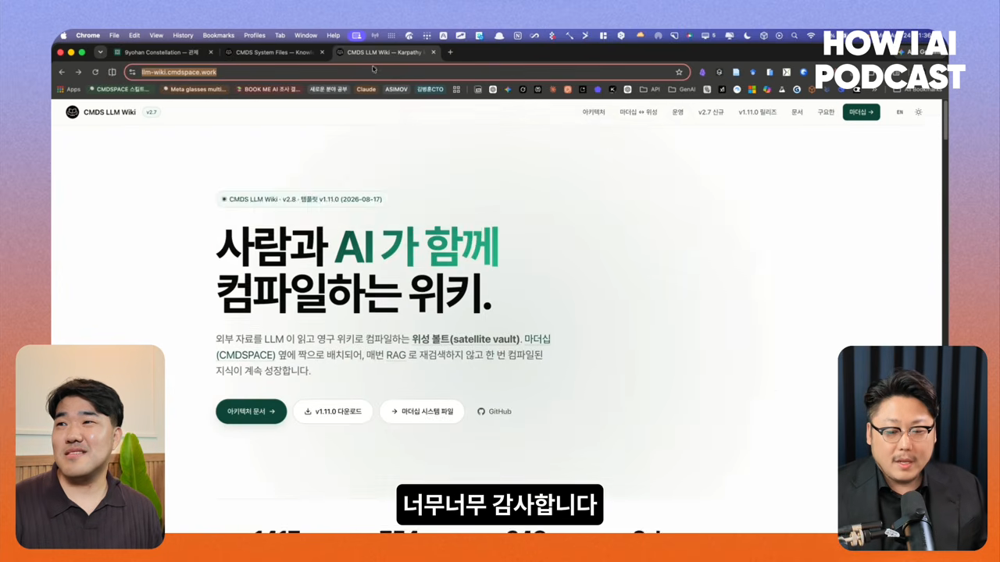
왜 RAG가 아니라 컴파일일까요
그는 RAG가 여전히 탁월한 방법이라고 먼저 인정해요. 다만 벡터 데이터베이스나 그래프 데이터베이스를 만들고 올리는 데 시간이 들고, 내용이 자주 바뀌면 그때마다 다시 넣고 갱신해야 해요. 규모가 크고 출처가 분명해야 하는 지식, 예를 들어 고객 응대 매뉴얼에는 RAG가 훨씬 좋아요. 반면 계속 업데이트되는 지식을 가지고 사람이 새로운 걸 해 보려 할 때는 한계가 있다고 봐요.
| RAG | 컴파일하는 위키 | |
|---|---|---|
| 준비 | 벡터·그래프 데이터베이스를 만들고 올려요 | 읽은 자료를 개념별 위키 카드로 정리해요 |
| 내용이 바뀌면 | 다시 넣고 갱신해야 해요 | 기존 카드에 출처를 더하고 연결해요 |
| 잘 맞는 곳 | 규모가 크고 출처가 분명해야 하는 지식(고객 응대 매뉴얼) | 자주 업데이트되고, 그걸로 새로운 걸 해 보려는 지식 |
| 답변 이후 | 다음 질문에 반영되지 않아요 | 질문·답변도 위키에 쌓여요 |
아래 슬라이드가 그 한계예요. 왼쪽 '기존 RAG 적용'은 질문하면 답변이 나오고 끝나요. 아래 줄의 X 표시처럼 그 답이 다음 행동에는 반영되지 않아요. 오른쪽 '원했던 구조'는 결과가 계속 쌓여서 다음 행동의 재료가 되는 구조예요.
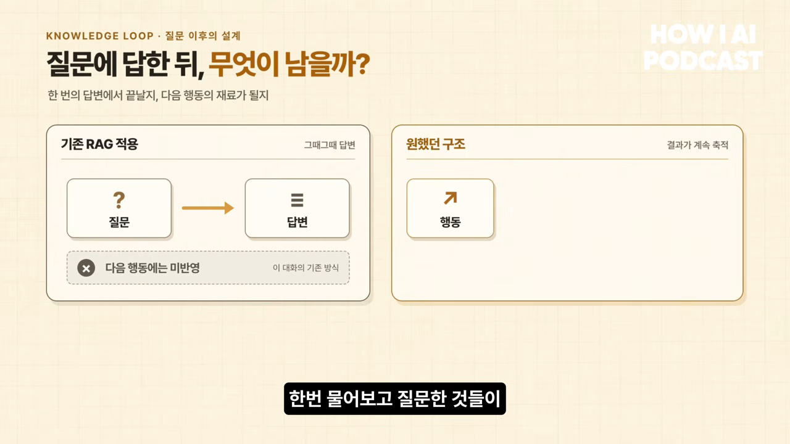
그는 지식이 복리처럼 쌓이는 구조를 원했어요. 예전엔 안 되던 게 모델 성능이 오르면서 가능해졌대요. 컨텍스트 윈도우가 수십만 토큰을 넘은 지 오래고, 이제 100만 토큰 이상도 나오니까요. 그릇이 커졌으니 자료를 다시 넣어 새롭게 볼 수 있게 미리 정리해 두는 거예요. 그래서 컴파일을 "보기 쉽게 전처리하는 작업"이라고 설명해요.
구체적으로는 이렇게 돌아가요. 아래 왼쪽 위 '아티클 1'에 개념 A, B, C가 있으면, 글을 통째로 보관하지 않고 개념별 위키 카드 세 장으로 나눠요. 그다음 '아티클 2'를 읽었더니 D와 A가 있어요. A는 이미 카드가 있으니, 둘을 연결하고 린트를 돌려요.
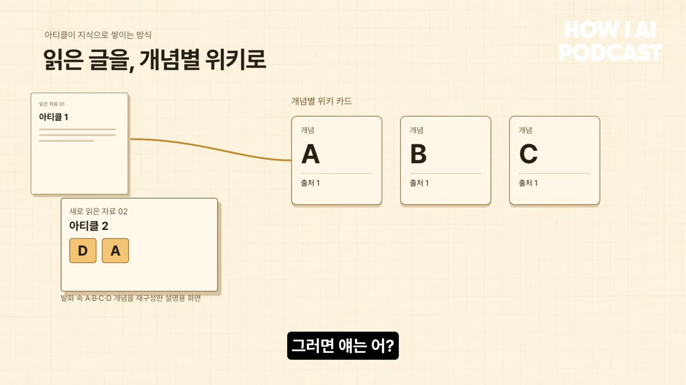
질문과 답변도 쌓여요. 아래 슬라이드에서 A 카드의 출처가 '출처 1 + 출처 2'로 늘었고, 나중에 "A를 가지고 무엇을 할 수 있을까?"라고 물으면 그 질문·답변·참고 자료가 위키에 저장돼요. 그러면 다음번엔 "지난주에 이거 물어봤죠, 여기에 더해 드릴까요?"부터 시작할 수 있어요. 그는 이걸 가장 큰 가치로 꼽아요.
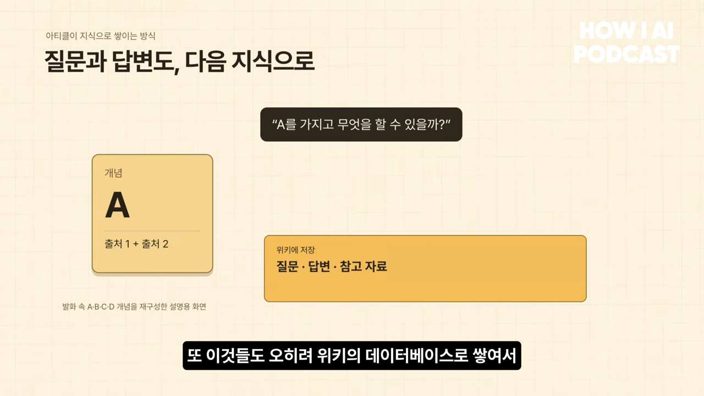
작은 메타데이터가 길잡이예요
이 구조를 가능하게 한 기술로 그는 Claude Code에 스킬이 나왔을 때의 기술 문서, 점진적 공개를 꼽아요. 본문이 시작되기 전 위쪽에 메타데이터 영역을 설계할 수 있다는 게 핵심이래요. 전체 문서에서 보면 빙산의 일각이지만, 그 일각만 읽어도 문서 전체를 짐작할 수 있어요. 아래 슬라이드처럼 먼저 제목·설명·주제 같은 메타데이터를 읽고, 필요한 문서 B를 고른 다음, 그 본문만 깊게 읽는 거예요.
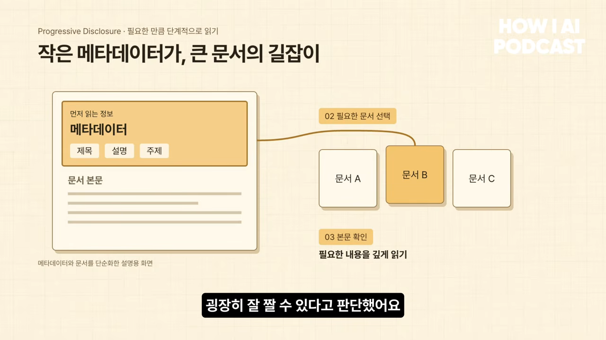
그래서 그는 카파시의 글만 보고 "나도 위키 만들어 줘" 한 볼트들을 보면 메타데이터가 약하다고 말해요. 타입, 설명(description), 날짜, 태그, 주제, 관련 세션까지 무엇을 연결 정보로 담을지가 중요하대요. 아래 화면에서 그가 펜으로 표시한 위쪽 속성 칸이 메타데이터이고, 오른쪽 긴 상자가 본문이에요. 속성 중 session-link를 누르면 이 문서를 만들 때 쓴 Claude Code 세션이 바로 열려요.
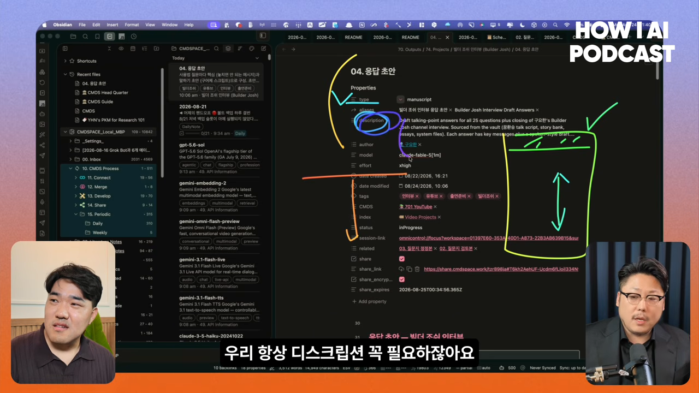
아홉 요한과 세 자리 번호
조쉬가 하네스 설정을 묻자, 그는 Claude Code를 가장 많이 쓴다고 답하고 바로 '아홉 요한' 이야기를 꺼내요. 그가 지금 만들고 있는 9요한 Constellation이에요.
아홉 명의 요한
세계적으로 유명한 인물 50명쯤을 검토해서 아홉 명을 골랐대요. 그리고 각자에게 그가 하는 일 하나씩을 맡겼어요. 아래 화면의 표 'The 9 specialist persona files'를 보면 901 케플러는 지식 매핑과 리서치 종합, LLM 위키 신선도 관리를, 902 괴테는 글쓰기와 출판을, 903 듀이는 교육과 커리큘럼을 맡아요. 표 맨 오른쪽 Fruit 칸에는 온유, 사랑, 자비 같은 덕목이 하나씩 붙어 있어요.
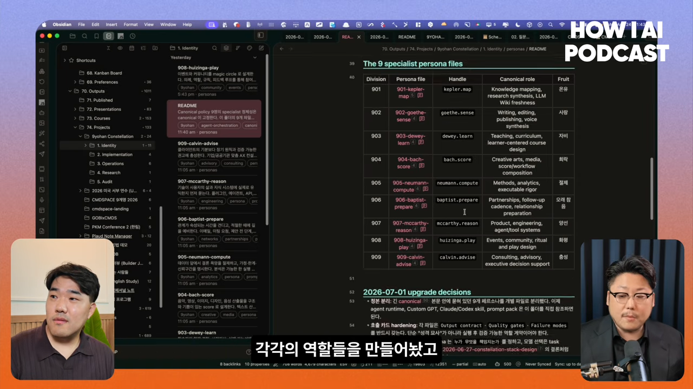
아홉 명은 케플러, 괴테, 듀이, 바흐, 노이만, 세례요한, 매카시, 하위징아, 칼뱅이에요. 이 페르소나들을 어디서 돌릴지도 나누는 중이에요. "너는 OpenClaw에서 돌아", "너는 내가 Claude Code로 직접 관리할게", "너는 Hermes에서 돌아" 하는 식이에요. 예를 들어 하위징아는 팀 슬랙에 들어가 있고 OpenClaw에서 Claude 모델로 돌아가요. 페르소나 설계는 끝났지만 운영은 하나씩 테스트하는 단계라고 분명히 말해요.
아홉 요한을 소개하는 웹페이지도 공개했어요. 아래 화면처럼 요한마다 번호, 별명, 하는 일, 원래 인물 이름이 카드로 나와요. 902 괴테 요한은 '글쓰기 & 출판', 903 듀이 요한은 '교육 & 커리큘럼'이에요.
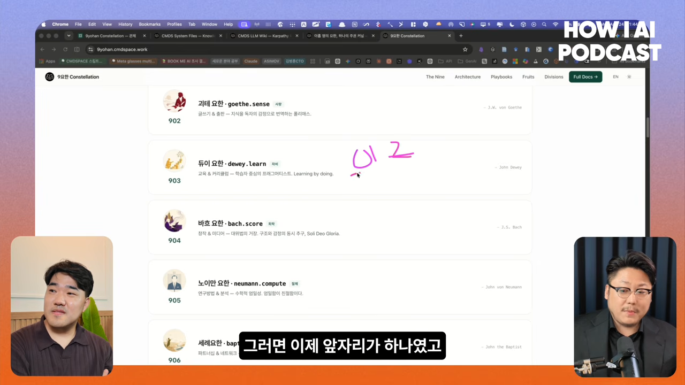
번호만 기억나도 찾아가요
조쉬가 이 번호 체계를 뭐라고 부르냐고 묻자, 그는 십진 분류법이라고 답해요. 가장 유명한 게 듀이 십진 분류법(DDC(Dewey Decimal Classification))이고, 도서관에서 보는 분류도 이걸 쓴대요. 처음엔 01, 02처럼 썼다가 지금은 앞자리 하나에 뒤 두 자리를 붙인 세 자리를 써요. 600번대라면 601부터 699까지 올 수 있어요.
아래 화면은 CMDS Head Quarter의 끝부분이에요. 900 Divisions 아래에 901 케플러 요한부터 909 칼뱅 요한까지 아홉 줄이 있어요. 그 아래 CMDS Process에는 Connect, Merge, Develop, Share 네 단계와 각 단계에 속한 100 Themes, 200 Literature, 300 Data 같은 대분류가 적혀 있어요.
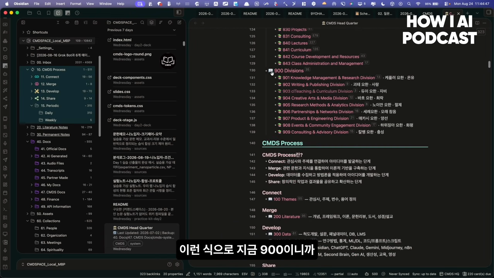
화면에 나온 대분류와 900번대를 한 장으로 모으면 이래요. 아무것도 기억나지 않아도 901을 치면 케플러가 떠올라요. 케플러라는 이름이 기억날 수도 있지만 숫자만 기억날 수도 있으니, 숫자와 지식을 짝지어 두는 게 중요하다고 해요.
암흑기, 그리고 에이전트가 분류해요
처음에는 엄밀하게 설계해서 잘 썼대요. 그런데 확장하려고 새 번호를 계속 만들다 보니, 기억할 수 없을 만큼 많아진 '암흑기'가 왔어요. 그때는 그도 매번 목차를 열어 보며 "뭐였지?" 하고 썼대요.
지금은 분류를 에이전트가 해요. 아래 질문지 검토본의 속성을 보면 CMDS 칸에 '701 YouTube'가 자동으로 붙어 있어요. 같은 화면에 model, session-link, 관련 문서(related) 연결도 다 들어 있어요.
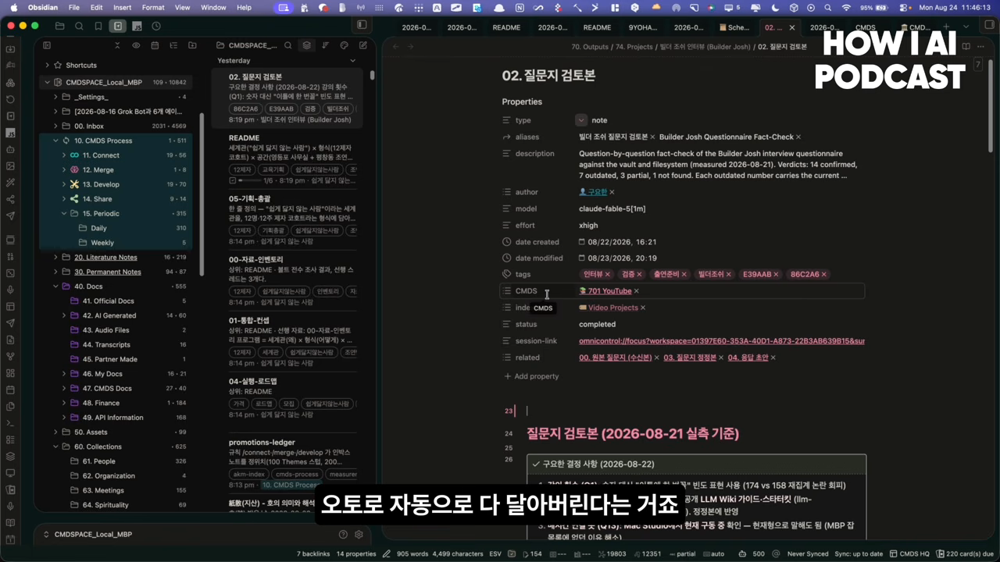
CMDS), 색인(index), 상태, 세션, 관련 문서까지 에이전트가 채워 줘요. 영상 27:11에서 보기최근 연구에서는 여러 회사의 리서치용 AI 모델 여섯 개쯤에 같은 조사를 돌린대요. 결과가 나오면 에이전트가 '리서치' 항목과 주제를 달고, 각 세션을 링크로 넣어요. 중요한 건 예전 글까지 엮는다는 점이에요. "선택적 망각의 기술"이나 "기억을 믿지 마라, 시스템을 믿어라" 같은 그의 옛 에세이를 찾아 같이 연결해요. 아래 화면은 그렇게 정리된 에이전틱 메모리 조사 문서예요. 도입 여부를 GO, CONDITIONAL GO, NO-GO 같은 판정으로 정리한 표가 보여요.
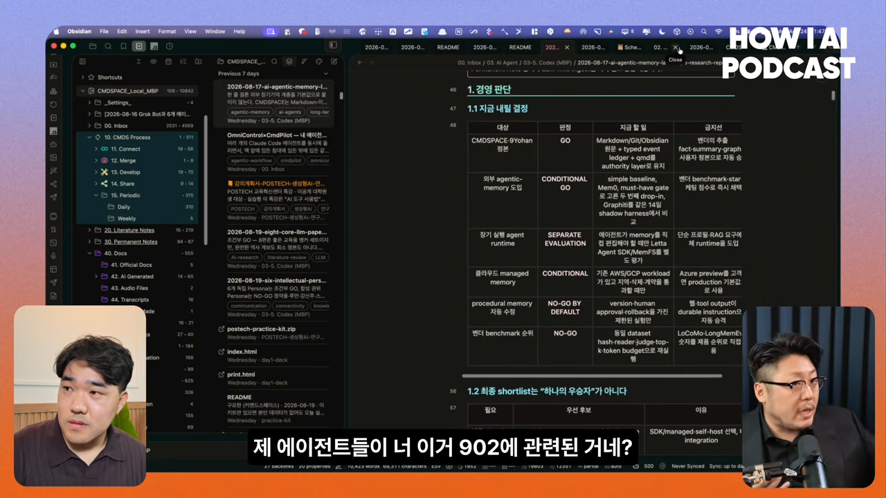
이런 라우팅 발판을 깔아 뒀기 때문에, 에이전트가 "이건 902와 관련 있네, 630과 관련 있네"를 잘 짚는다고 그는 판단해요.
처음이라면 어디서 시작할까요?
조쉬가 처음 시작하는 사람은 분류 체계를 어떻게 잡아야 하냐고 묻자, 그는 AI가 있을 때와 없을 때 답이 다르다고 해요. AI가 없을 때는 내가 인지할 수 있는 범위에서 최소한의 항목만 쓰라고 권했대요.
지금은 우리의 맥락이 이미 AI에 많이 담겨 있어요. 그래서 그의 공개 시스템 파일을 가져가 경로로 참조시킨 다음, "이 사람 거 있어 보이는데 내 버전으로 만들어 줘"라고 하면 된대요. 잘 설계된 예시 하나를 변형해서 쓰는 게 가장 좋다는 거예요.
누구에게 필요하냐는 질문에는 엄밀히 말하면 컴퓨터 앞에서 일하는 사람 대부분이라고 해요. 그렇다고 그처럼 오래 고민하며 설계할 필요는 없어요. 단순한 메모장 수준이라도 내 데이터가 남는 것만으로 옵시디언의 가치는 충분하다고 봐요. 그냥 시작해도 괜찮대요.
이것 하나만은 나눠 보세요
그래도 하나만 권한다면, 내가 하는 일과 내가 다루는 주제를 나누래요. 그의 인덱스 노트에는 연구·프로젝트·강의 세 가지가 구분돼 있어요. 이게 '클래스'예요. 그와 별개로 데이터 분석, 컨설팅, 자녀 교육 같은 '토픽'이 있어요. 영상에서 든 예를 두 칸으로 옮기면 이래요.
설레는 것부터 기록하세요
영상 마지막(48:44)에 지식관리를 시작하는 사람에게 한마디를 부탁하자, 그는 기록할 때 설레는 게 무엇인지가 중요하다고 해요. 꼭 커리어와 관련 없어도 돼요. 위스키를 좋아하면 위스키만 정리하는 것도 좋은 방법이에요. 좋아하는 걸 담다 보면 그걸로 인스타그램을 할 수도 있고 유튜브가 잘될 수도 있으니, 마음을 뛰게 하는 일부터 정리해 보라는 게 그의 마지막 조언이에요.
녹음 1,400개가 지식이 되기까지
여러 페르소나로 일하면서 그 기록을 다 어떻게 쌓느냐는 질문에, 그는 가장 많은 입력이 녹음을 받아쓴 전사본이라고 답해요. Plaud Note라는 녹음기를 1년 넘게 썼고, 녹음이 1,400개를 넘었대요.
이 녹음에서 나온 결과물 중 하나가 인물 프로필이에요. 정말 중요한 고객이나 만난 사람을 따로 정리하고, 누구와 어떤 이야기를 했는지를 데이터베이스처럼 계속 쌓아요. 영상에서는 이 베이스를 CMDS C level이라고 불러요.
폴더 분류만으로는 아쉬웠어요
아래 화면이 Plaud의 기본 웹 서비스예요. 왼쪽에 폴더 목록이, 가운데에 날짜와 제목이 붙은 녹음 파일 목록이 있어요. Plaud가 해 주는 건 사실상 이 폴더 분류 정도예요. MCP(Model Context Protocol)도 열어 두었지만 앱 기능 자체가 아쉬웠대요.
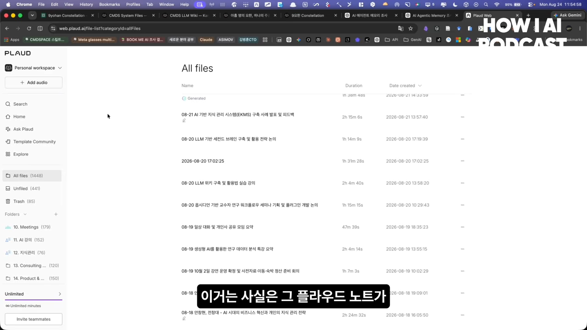
그래서 Swift로 직접 앱을 만들었어요. 아래 화면의 Plaud Note Manager예요. 왼쪽 위 Recordings 칸에 전체 1,448개, 분류 안 된 것 441개, 캐시된 것 1350/1448이 보여요. 가운데 녹음마다 폴더, 진행 상황, 사용 여부(Not Used)가 붙어 있고, 오른쪽에는 'Send to Vault' 버튼과 Claude, Codex, Gemini, Grok별 요약 칸이 있어요.
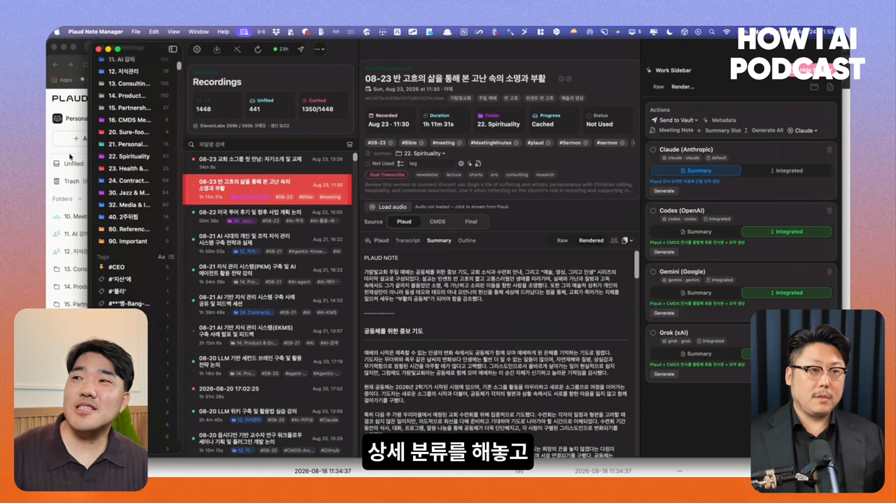
구조는 이래요. 웹 서비스에 있는 녹음을 그대로 가져와 앱에 뿌리고, 상세 분류를 해서 옵시디언과 연결해요. 분류용 메타데이터와 태그는 로컬 데이터베이스에 따로 두고, 녹음의 세션 ID만 짝지어 놓았어요. 원본은 건드리지 않고 정보만 덧붙이는 방식이에요.
전사 품질도 챙겨요. Plaud는 Whisper 모델로 전사하는데, 엄밀해야 하는 녹음은 ElevenLabs로 한 번 더 전사해요. 이 앱은 영상 시점에는 일반에 공개되지 않았어요.
가벼운 하네스, 그래도 직접 읽어요
조쉬는 위키 볼트를 'Claude Code로 돌아가는 AI 팀원'으로 보고, 그 운영 설계를 물어요. 그는 핵심이 CLAUDE.md라고 답하며 화면을 열어요.
시스템 파일마다 읽는 순서가 있어요
아래 화면은 CLAUDE.md의 앞부분이에요. 'Related System Files (9 System Files)' 아래에 파일마다 precedence 번호가 붙어 있어요. 1번이 CLAUDE.md(Claude Code 전용), 2번이 AGENTS.md(Codex, Cursor 같은 다른 코딩 에이전트용), 3번이 Gemini용 파일이에요. 그 아래로 볼트 철학을 담은 파일, Guide, Head Quarter가 이어지고, 맨 아래 자기 소개 성격의 BRAIN.md와 BRAIN_PROMPT.md가 7, 8번이에요.
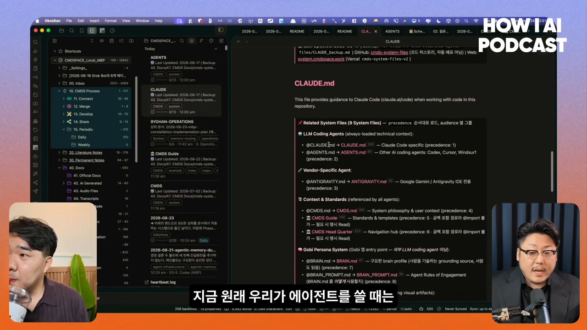
이렇게 나눈 이유는 두 가지예요. 하나는 가르치는 사람이라서예요. 그의 파일을 가져간 사람이 Codex만 쓴다면 AGENTS.md가 필요하잖아요. 다른 하나는 그 자신도 토큰 사정 때문에, 또는 Codex가 더 잘하는 일이라서 Codex를 쓰기 때문이에요. 이 파일 안에는 에이전트에서 흔히 쓰는 @ 멘션과 옵시디언의 노트 연결 방식을 헷갈리지 않게 알려 주는 섹션도 있어요.
실수는 규칙으로 남겨요
운영하다 문제가 생기면 바로 반영해요. CLAUDE.md에 적기도 하고, 룰 파일이나 스킬로 만들기도 해요. 그래서 그의 시스템 파일을 받으면 옵시디언에서 편집할 때 나는 오류는 대부분 잡혀 있을 거래요. 아래 'Pre-Flight Checklist'가 그 결과예요. 마크다운 파일을 만들거나 고칠 때마다 확인할 항목인데, 맨 위 두 줄이 'YAML 프런트매터는 스페이스 두 칸(탭 아님)', '마크다운 본문은 탭(스페이스 아님)'이에요.
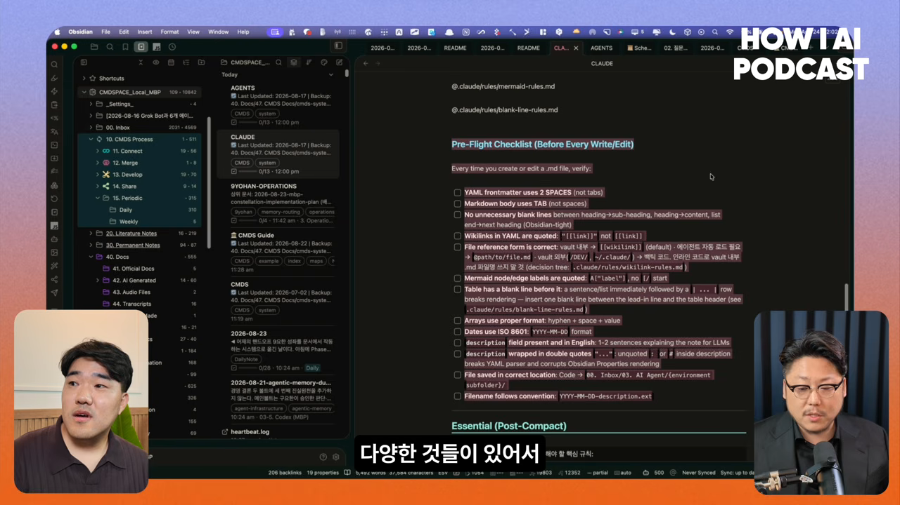
마침 화면에서 오류 하나가 실제로 보였어요. 아래 tags 칸에 동그라미 친 부분처럼, 숫자만으로 된 값 앞에 #이 붙으면 옵시디언이 태그로 보여 주지 못해요. 오른쪽 끝의 경고 표시가 그 신호예요. 그는 이런 것도 다 적어 둔다고 해요.
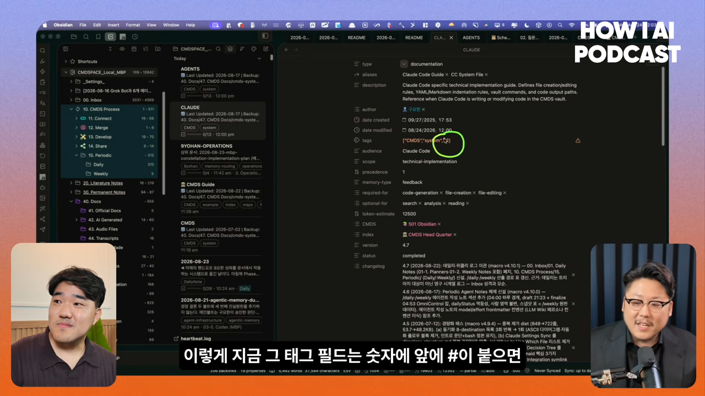
원래 CLAUDE.md는 꽤 길었는데, 가볍게 하는 게 좋다는 의견을 받아들여 줄였대요. 대신 참고할 문서로 가는 길만 걸어 뒀어요. 요즘 스킬을 만들 때 SKILL.md는 짧게 쓰고 참고 파일을 여럿 열어 두는 것과 같은 방식이에요.
하네스는 가볍게, 대신 직접 읽어요
조쉬는 요즘 하네스를 예전처럼 빡세게 잡을 필요 없다는 이야기가 많다고 해요. Claude Code를 만든 쪽에서도 모델이 좋아졌으니 그냥 쓰라고 한다면서 의견을 물어요. 그는 자기 방식이 사고가 나지 않을 링크를 촘촘히 넣은 가벼운 하네스라고 답해요.
그보다 중요하게 여기는 게 있어요. 에이전트가 만든 문서를 되도록 많이 직접 읽는 거예요. 그냥 버려지는 문서가 없게 하고 싶대요. 읽어야 무엇이 취향에 안 맞는지, 무엇이 틀렸는지 말해 줄 수 있으니까요. 그래서 에이전트에게 읽기 쉬운 문서를 만들라고 시키고, 그게 오히려 하네스를 가볍게 짜게 된 이유인 것 같다고 해요.
지금 에이전트들은 감사를 해요
아홉 요한이 실제로 어떻게 일하는지 묻자, 그는 솔직하게 답해요. 모든 게 완벽히 동작하진 않고, 설계만 완벽하게 된 상태래요. 그는 시선을 끄면 자기들끼리 노는 에이전트를 원하지 않았어요. 주인의식이 강해서 열쇠는 자기가 쥐고, 에이전트는 돕는 역할이에요. 그래서 지금 대부분의 에이전트는 감사(audit) 작업을 하고, 노트북을 손에서 놓지 않는 그에게 의견을 주는 식으로 쓰여요.
그 흔적이 데일리 로그에 남아요. 아래 화면 왼쪽은 아홉 요한을 어떻게 확정했는지 적은 'Decision Provenance'와 아홉 명 표예요. 오른쪽 그날의 데일리 노트에는 '프라임 코멘터리'가 있고, 그 아래로 10시 22분에 케플러(901), 괴테(902)가 각자 무슨 작업을 했는지 한 줄씩 기록돼 있어요.
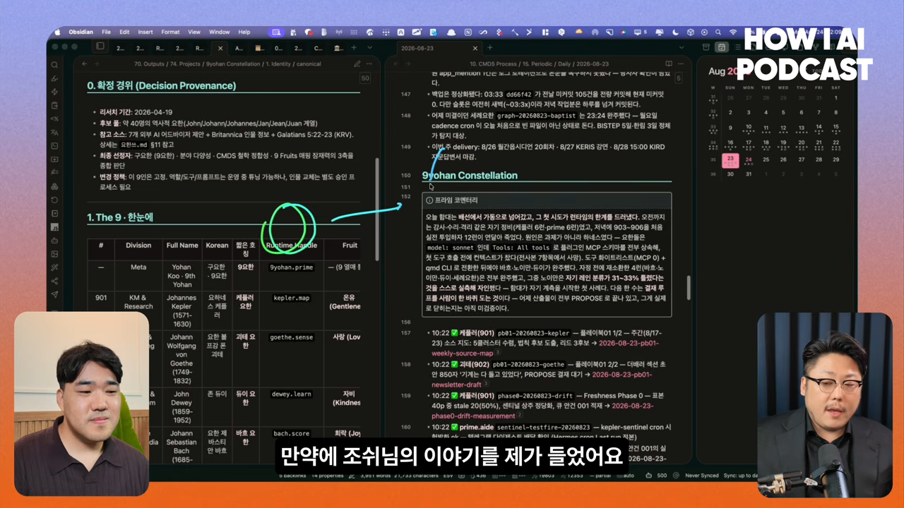
어디에 뭐가 있는지만 알면 돼요
그렇게 바쁜데 왜 다 맡기지 않고 직접 보냐는 질문에, 그는 위임은 당연히 하지만 어디에 무엇이 있는지는 알고 싶다고 해요. 강의 때 자주 드는 예가 아래 슬라이드예요. 어머니의 김치찌개 레시피는 그의 볼트에 있을까요? 없어요. 하지만 궁금하면 어머니께 전화하면 돼요. "김치 다음에 고기야? 들기름이야, 참기름이야?" 물어보면 되잖아요.
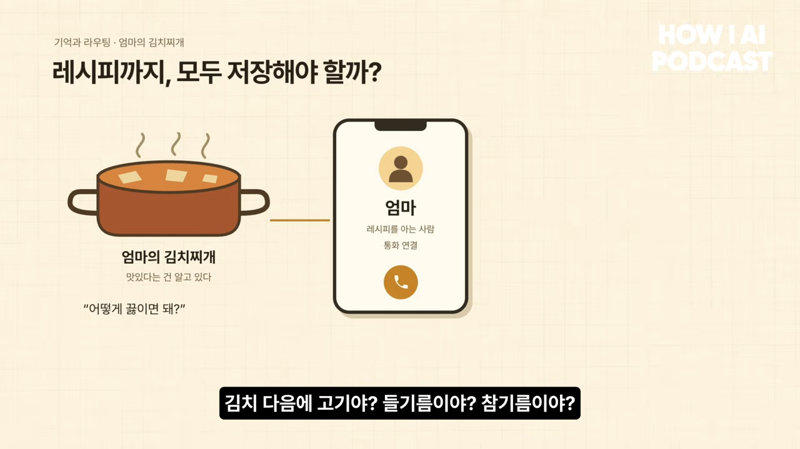
모든 지식을 내 경계 안에 담으려는 게 아니라, 어디 가면 무엇을 알 수 있는지 힌트를 담는 게 목적이에요. 아홉 요한도 그래서 만들었어요. 교육은 이 요한에게, 글쓰기는 저 요한에게 물으면 되도록요. 그 요한을 부르면 그가 맡은 폴더의 범위를 보고 이야기를 파악할 수 있어요. 항목은 정해 두고, 요한들이 그에게 리뷰를 해 주는 식으로 쓰고 있어요.
내가 아는 것만 위임할 수 있어요
조쉬는 앞으로 개인이 대기업 회장처럼 일하게 될 거라고 봐요. 그는 "내가 아는 것만 위임할 수 있다"고 답해요. 대기업 CEO(Chief Executive Officer)가 제대로 일하려면, 자기가 감사하고 감시하고 의견을 줄 수 있는 일을 위임해야 한다는 거예요.
자동화에 대한 생각도 비슷해요. 그에게 자동화는 벌여 놓은 일을 모으는 '수렴' 작업이에요. 그런데 그는 지금 새로운 일을 '발산'적으로 시도하는 데 시간을 더 쓰고, 그게 더 가치 있다고 느껴요. 지치거나 운영하는 조직이 커지면 그때 일을 수렴시켜 자동화하겠지만, 커맨드스페이스의 규모를 키우지 않는 이유도 여기에 있대요. 이렇게 이것저것 다 해 볼 수 있는 건 옵시디언이 지식 기반이 돼 줬기 때문이라고 해요.
조쉬는 AI가 내 머리 위가 아니라 내 아래에 있고, 그걸 관리하며 행복을 느끼는 삶이라면 좋은 방향이라고 정리해요. 그는 AI가 점점 똑똑해지겠지만, 가장 중요한 건 내 이야기와 생각이 어디에 있느냐라고 덧붙여요. 그게 있어야 똑똑한 AI를 내 취향과 목적에 맞게 부릴 수 있으니까요.
AKM 인덱스로 내 수준 재 보기
조쉬가 마지막으로 궁금해한 건 루프 엔지니어링이에요. 그는 그 방향이 맞다고 보면서도, 자신은 직접 하는 걸 좋아해서 거의 자동화하지 않는 영역이 있다고 해요. 그래서 어디까지 와 있는지 스스로 점검하려고 검사 도구를 만들었어요. 그게 AKM(Agentic Knowledge Management) 인덱스예요.
아래 첫 화면이 그 사이트예요. 제목이 "AI 에이전트가 함께 굴리는 지식관리, 몇 점입니까?"예요. 그는 기업의 AI 전환 컨설팅도 하기 때문에, 그럴 때 어디까지 점검해야 하는지 점수로 나눠 보고 싶었대요.
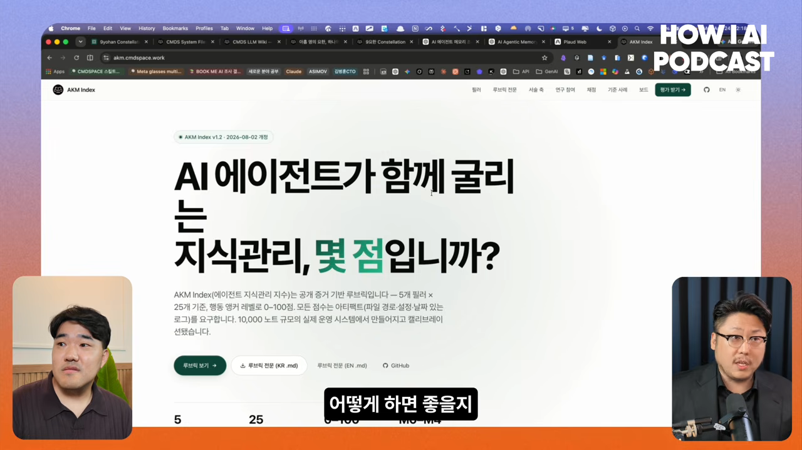
다섯 영역, 다섯 레벨
영역은 다섯 개예요. 아래 슬라이드처럼 프롬프트 20점, 컨텍스트 25점, 하네스 20점, 루프 20점, 이식성 15점이에요. 컨텍스트만 노랗게 강조돼 있는데, 그가 컨텍스트에 가중치를 더 줬기 때문이에요.
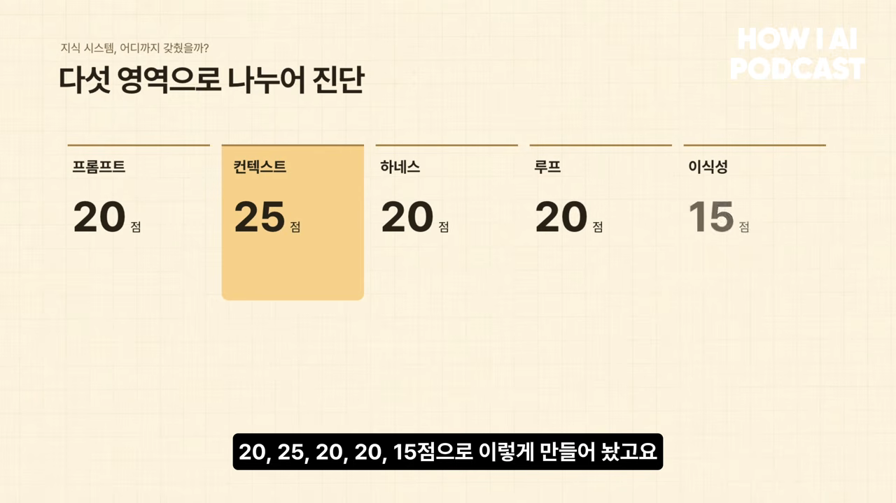
각 영역 안의 문항은 0점부터 4점까지 매겨요. 아래 슬라이드가 그 다섯 단계예요. 없으면 0, 필요할 때마다 손으로 하면 1(수작업), 하는 방법이 문서로 남아 있으면 2(문서화), 훅처럼 저절로 실행되면 3(시스템화), 스스로 돌아보고 다음 실행에 반영하면 4(개선 루프)예요.
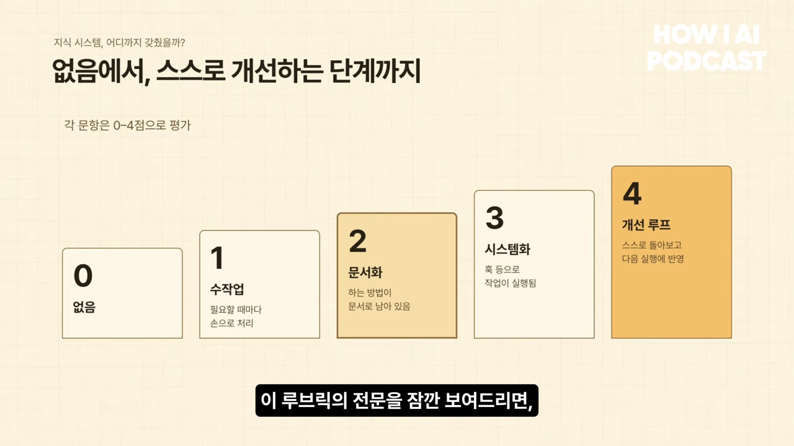
점수마다 '이런 상태면 몇 점'이라는 구체적인 예를 붙인 루브릭도 공개했어요. 영상에서 든 예로는 "알아서 잘 정리해 줘"라고만 하면 0점, 프런트매터 스키마가 문서로 있으면 2점, 스킬·커맨드와 프런트매터 룰이 있으면 3점, 린터까지 돌면 4점이에요. 아래 화면은 루브릭 전문 중 하네스 영역의 첫 문항 '도구 표면'이에요. 레벨 0부터 4까지 기준이 한 줄씩 적혀 있어요.
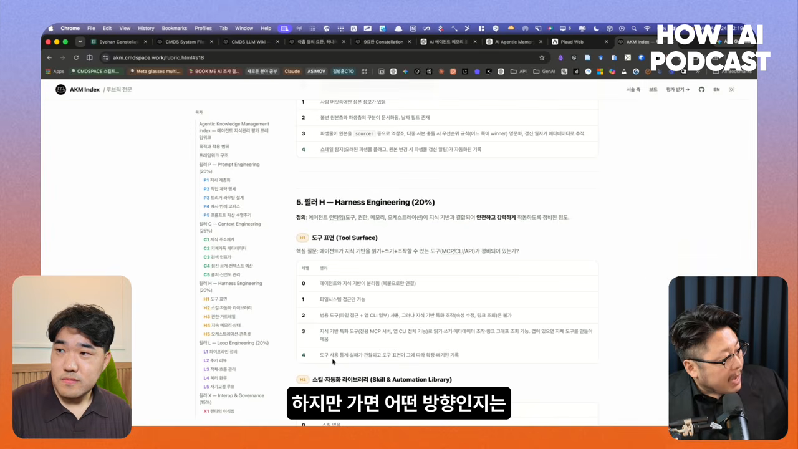
모두에게 자동화가 필요한 건 아니래요. 다만 이 길로 가면 어떤 방향인지는 한번 그려 두고 싶었대요. 그 자신도 처음엔 70점쯤 나왔고, 필요한 걸 하나씩 올리는 중이에요. 아래에서 영역별 레벨을 바꿔 보며 점수가 어떻게 움직이는지 직접 확인해 볼 수 있어요.
가정: 한 영역 안의 문항 다섯 개가 모두 같은 레벨이라고 봐요. 영역 점수 = 배점 × 레벨 ÷ 4
합계 50점 / 100점
- 모든 영역을 2(문서화)에 두면 딱 50점이에요. "50점도 어렵다"는 말이 왜 나왔는지 보여요.
- 컨텍스트만 4로 올렸을 때와 이식성만 4로 올렸을 때를 비교해 보세요. 같은 두 단계인데 12.5점과 7.5점으로 차이가 나요.
- 전부 3(시스템화)으로 맞추면 75점이에요. 구요한 대표의 첫 점수 70점은 이보다 조금 낮아요.
평가는 내 컴퓨터에서 한 번 돌아요
평가는 Claude Code 스킬로 받아요. 설치하면 각자의 컴퓨터에서 로컬로 돌고, 결과도 거기에만 남아요. 성적표는 아티팩트로 띄워 주고, 원하는 사람만 제출하게 해 뒀어요. 제출한 사람은 50명쯤이에요. 아래 리더보드 화면 맨 위에 100점을 받은 사람이 있어요. 그는 처음엔 80점대였는데, 개선을 거듭하고 30일 동안 운영해야 잴 수 있는 문항까지 채워서 100점이 됐대요. 표에는 영역별 점수(P/20, C/25, H/20, L/20, X/15)가 따로 나와요.
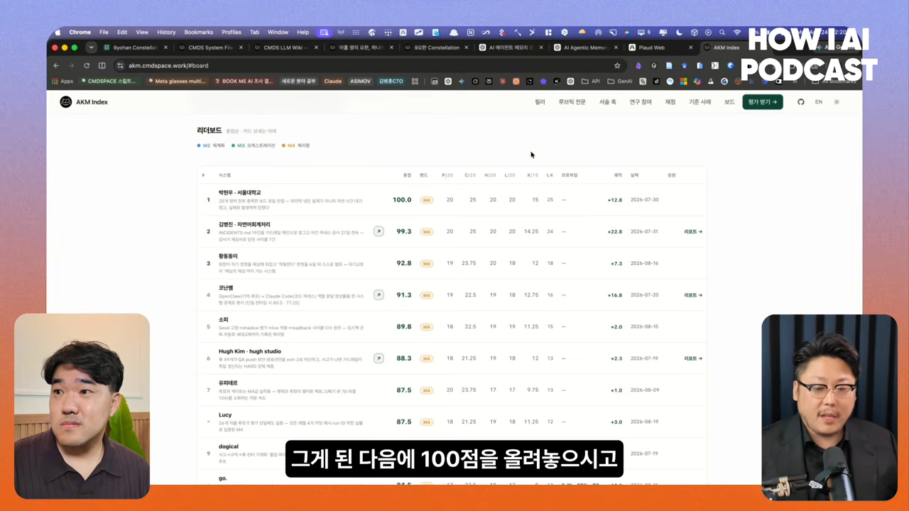
조쉬가 "깔아 두면 Claude Code 활동이 계속 추적되는 거냐"고 묻자, 그는 아니라고 해요. 상주하는 프로그램이 아니라, 돌릴 때 한 번 세션 기록을 쭉 스캔하고 끝나는 평가예요. 그래서 에이전트마다 세션 기록이 어디 있는지 정리해 뒀어요. 아래 화면의 표가 그거예요. Claude Code는 ~/.claude/projects/, Codex CLI(Command Line Interface)는 ~/.codex/sessions/처럼 런타임별로 세션·로그 경로와 스킬·설정 경로가 적혀 있어요.
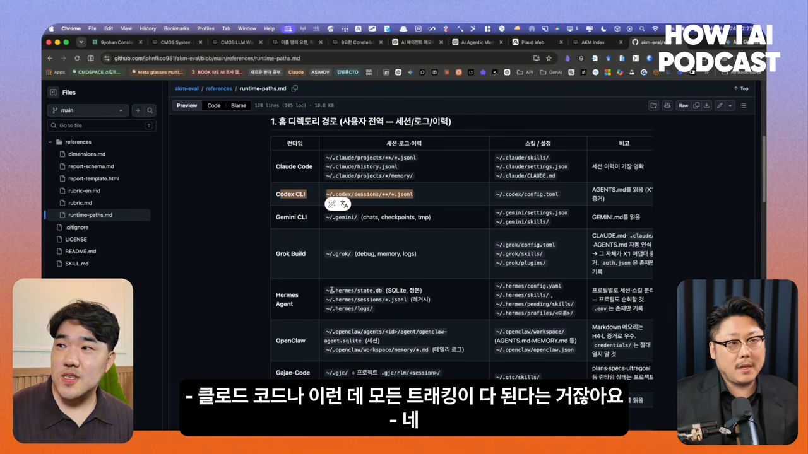